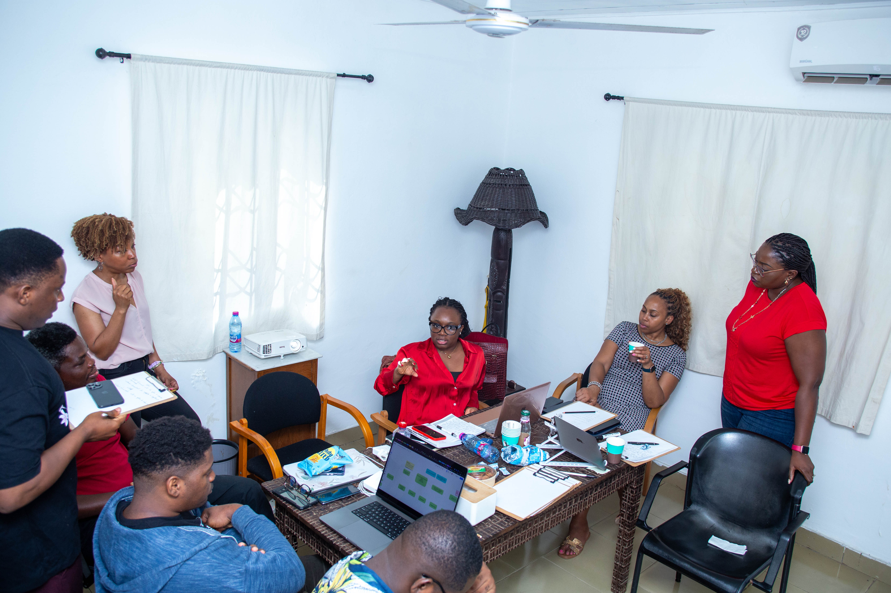
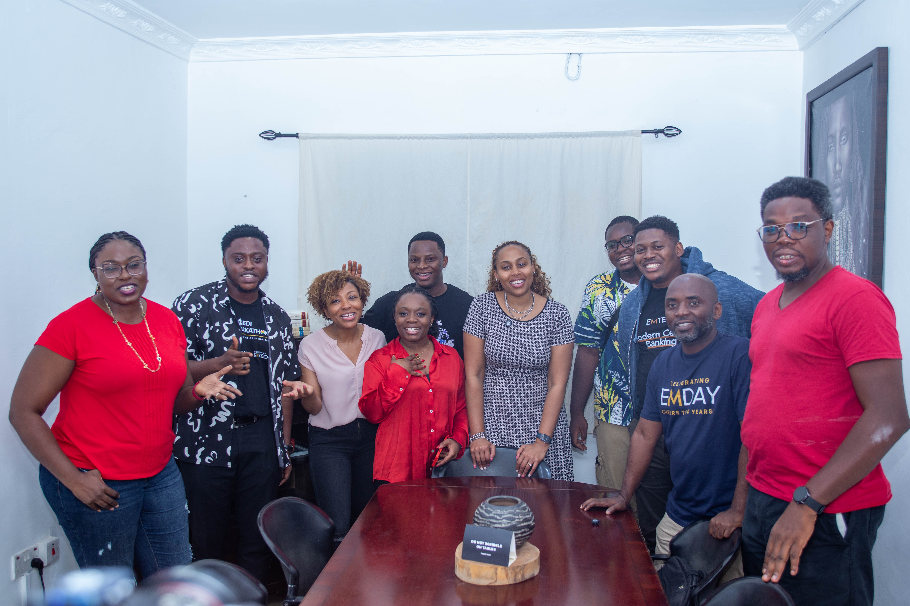
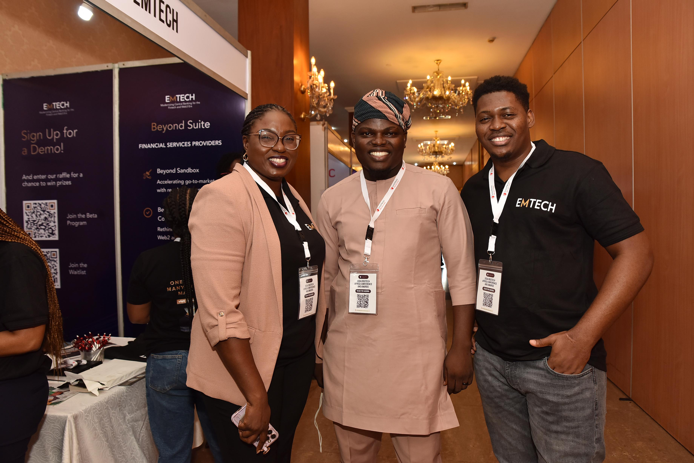
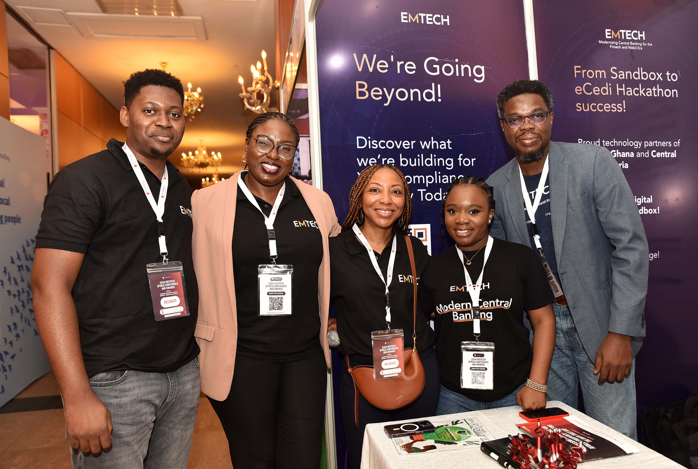
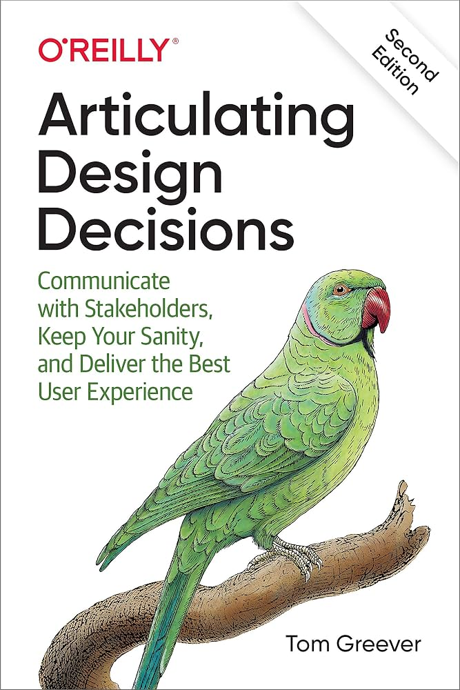
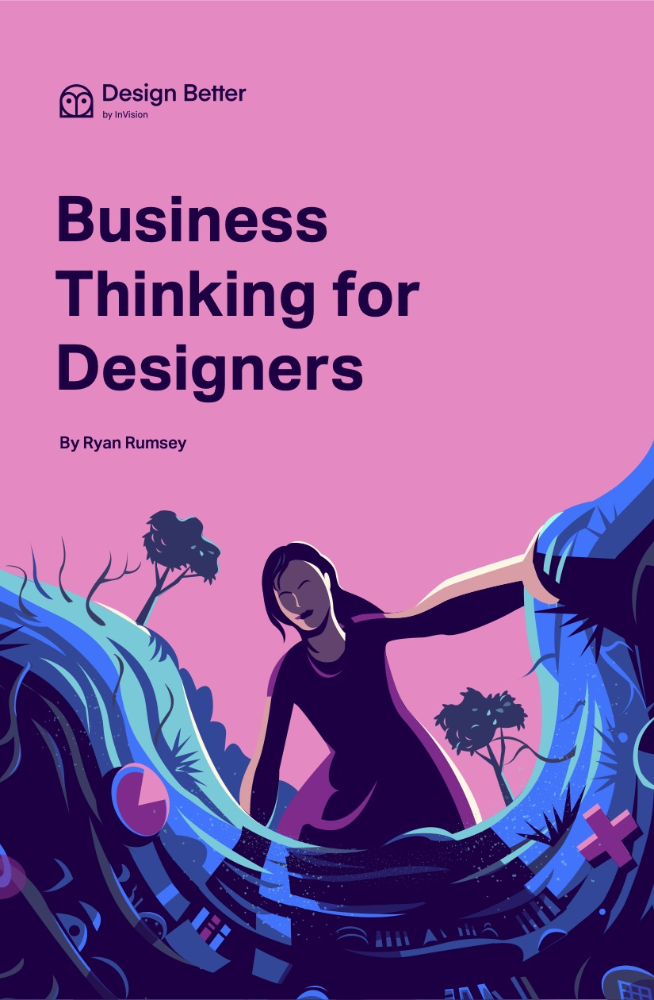
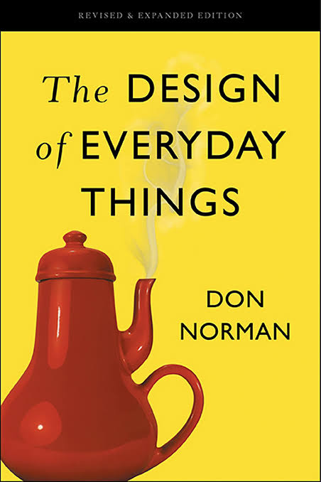
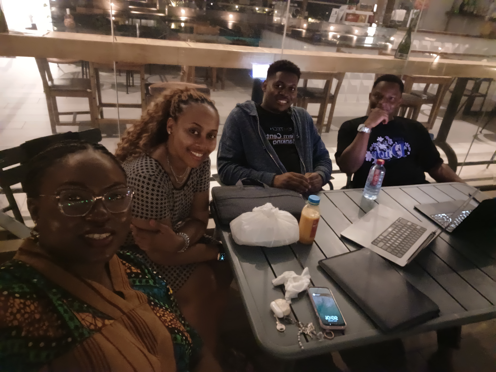

Hey there 👋🏼
I'm only human, but to my family and friends, I'm a tech guy with superpowers. I solve problems with a user-first mindset, bring clarity to complexity, and believe there's a solution to almost everything.
I own the whole arc, from research to a live product.
I turn complex, ambiguous problems into meaningful business opportunities. I believe the best decisions happen at the intersection of research, design and code, which is why I stay close to all three.
BUILDS AND SHIPS
I design and build digital products, from early research and product strategy through interaction design, prototyping, and implementation. I work closely with engineering to ensure ideas become functional, production-ready experiences.
AI JUDGMENT
I work with AI tools and emerging technologies as part of my design process. I understand when AI can improve a product experience, accelerate exploration, or simplify complex workflows, and when human judgment should take precedence.
RESEARCH BACKED
My design decisions are grounded in user research, product discovery, usability testing, and evidence rather than assumptions. I focus on understanding complex problems before translating them into clear, usable solutions.
TOOLS


I'm a Senior Product Designer, problem solver, and occasional tech support for family and friends. I have 7+ years of experience designing digital products across fintech, B2B SaaS, blockchain, Bitcoin, developer tools, and emerging technologies. I've worked on everything from financial infrastructure for central banks to Bitcoin wallets, with one consistent goal: making complex things easier for people to use.


I believe good design goes beyond making things look good. It's about understanding problems, questioning assumptions, and connecting user needs with business goals and technical realities. I've led design initiatives, worked with cross-functional teams, and helped bring products from concept to implementation. At EMTECH, I've design financial and regulatory technology for central banks, lead a team of designers, and build systems that make complex financial operations easier to manage.


Outside product design, I'm interested in the intersection of design, technology, and society. I contributed to open-source projects in the Bitcoin ecosystem, lead design efforts at Flow Research, an African open-source AI research lab, and explore AI governance and the future of work. With an engineering background, I'm also drawn to the technical side of building products, experimenting with new technologies, and bringing ideas to life through prototyping and a little coding.

When I'm not designing, I'm probably exploring a new technology, sharing knowledge with other designers, contributing to an open-source project, or fixing something that probably just needed to be turned off and on again. Ultimately, I enjoy difficult problems, thoughtful collaboration, and working with people who care about building meaningful things. I'm a designer, but curiosity is probably my most-used tool.
Career Journey
-
to Present
New York, U.S (Remote)
-
to Present
Remote
-
Remote
-
Raleigh, NC, U.S (Remote)
The Reading Shelf
A few books that have shaped how I approach design, understand problems, and think about the world.




With EMTECH Team

